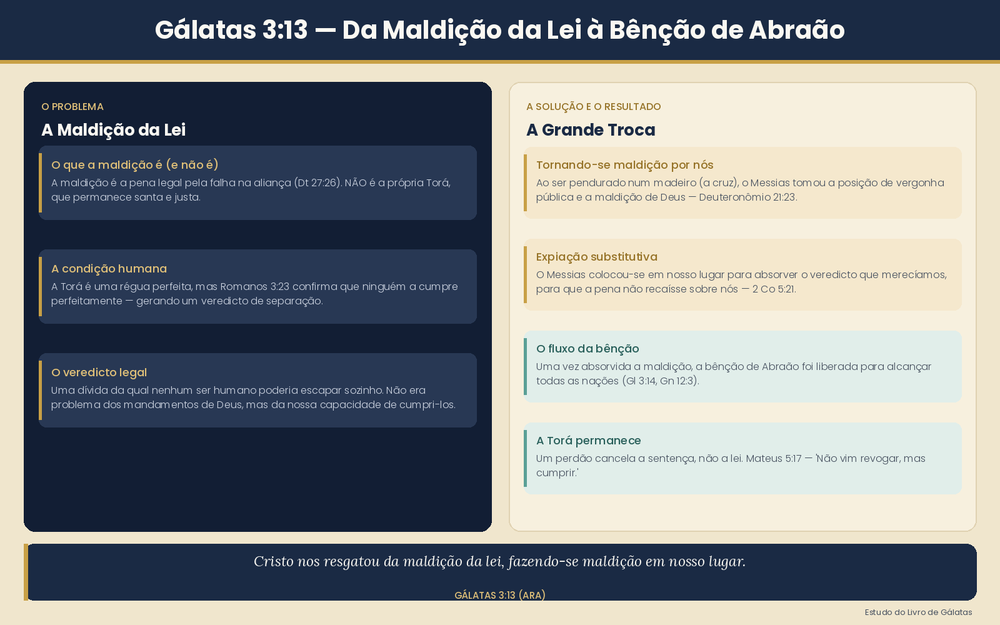

"Cristo nos resgatou da maldição da lei, fazendo-se ele próprio maldição em nosso lugar; porque está escrito: Maldito todo aquele que for pendurado em madeiro."
Este é um dos versículos mais ricos em teologia em todas as cartas de Paulo. Antes de entender o resgate, é preciso entender o que a maldição realmente é. Paulo cita Deuteronômio 27:26: "Maldito aquele que não confirmar as palavras desta lei, cumprindo-as." A maldição não é a própria Torá — a maldição é a consequência de não conseguir cumpri-la perfeitamente.
A Torá é santa. O problema é a condição humana — ninguém a cumpre perfeitamente. Por isso a maldição é o veredicto legal que recai sobre quem quebra a aliança.
Paulo cita Deuteronômio 21:23: "Maldito todo aquele que for pendurado em madeiro." No antigo Israel, um criminoso executado e pendurado num madeiro era considerado portador de vergonha pública — sob a maldição de Deus. Paulo vê nisso a chave: Yeshua, pendurado na cruz (um madeiro), tomou visivelmente sobre si a posição de um maldito.
Isso é chamado de expiação substitutiva — Ele colocou-se em nosso lugar, sob o veredicto que merecíamos, para que o veredicto não recaísse sobre nós.
Paulo não para na cruz. Ele continua no versículo 14: "…para que a bênção de Abraão chegasse aos gentios em Yeshua, o Messias, a fim de que recebêssemos a promessa do Espírito pela fé." O resgate da maldição tem um destino — abre a porta para a bênção de Abraão e o dom do Espírito a todas as nações.
Um ponto crucial que esta passagem deixa claro: se o Messias nos resgatou da maldição da lei, isso significa que a própria lei continua de pé. Você é resgatado de um veredicto judicial — não da existência do tribunal. A lei ainda define o que é certo e errado. O que mudou é que a pena já não recai sobre você — porque o Messias a pagou.
Aqui está todo o movimento de Gálatas 3:13–14 disposto como uma única jornada.
O comentário de Stern sobre este versículo é excepcional — ele recorre à linguística grega, à lei deuteronômica, às tradições do Messias sofredor dentro do próprio judaísmo e ao Talmude. Juntos, revelam que o argumento de Paulo não é antijudaico, mas profundamente enraizado nas próprias escrituras de Israel e no pensamento rabínico.
1. A quem se aplica a maldição?
2. Como o Messias se fez maldição
"A ideia de que o Messias pode ser amaldiçoado contradiz algumas noções judaicas tradicionais sobre o Messias, mas não todas. Pois as maldições prescritas em Deuteronômio 28:15–68 são sofrimentos físicos e emocionais, não espirituais, e certamente não remoção eterna da presença de Deus."
Stern, JNTC sobre Gálatas 3:13
3. As raízes judaicas de um Messias sofredor
"Os Rabinos ensinaram que o Santo, bendito seja Ele, dirá ao Mashiach Ben-David: 'Pede-me qualquer coisa, e te darei, pois está escrito: Tu és meu filho, hoje eu te gerei; pede-me, e te darei as nações como herança' (Salmo 2:7–8). Quando Mashiach Ben-David vir que Mashiach Ben-Yosef foi morto, dirá a Deus: Senhor do Mundo! Tudo o que peço é vida!"
Talmude Babilônico, Sukkah 52a — citado por Stern

| Conceito | Significado |
|---|---|
| A maldição | O veredicto que recai sobre quem quebra a Torá — não a própria Torá |
| "Pendurado em madeiro" | O Messias entrou visivelmente na posição do maldito |
| Resgatados | Comprados para fora do veredicto — a dívida foi paga |
| A Torá permanece | Um perdão cancela a sentença, não a lei |
| O propósito | Abrir a bênção de Abraão e o Espírito a todas as nações |
"Cristo nos resgatou da maldição da lei" significa: o veredicto legal de condenação que pairava sobre todo ser humano que falhou em cumprir a Torá perfeitamente — o Messias o absorveu por completo, em nosso lugar, para que o que foi prometido a Abraão muito antes de a lei existir pudesse finalmente alcançar toda nação, judeu e gentio, pela fé.
{kind=link}